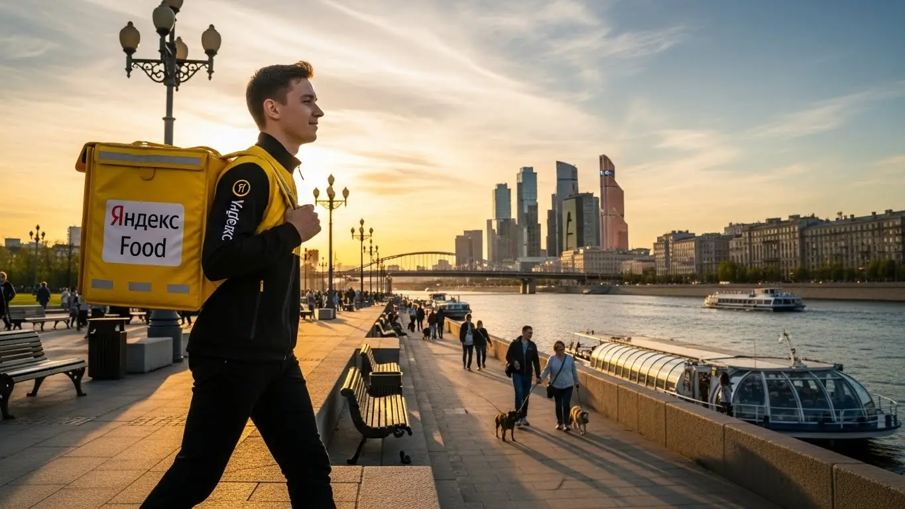
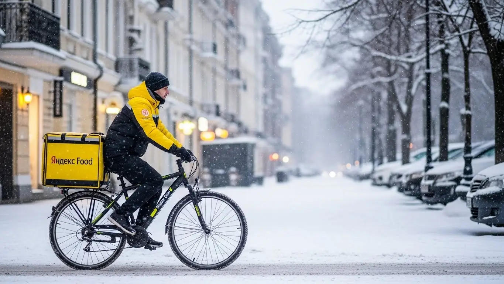

Работа курьером Яндекс Еда в Ивантеевке: доход и условия 2025-2026

- Работа курьером Яндекс Еды в Ивантеевке: для кого эта вакансия и что вы получите
- Сколько вы будете зарабатывать курьером в Ивантеевке: калькулятор дохода и разбор выплат
- Реальный заработок курьера в Ивантеевке: смены и месячный доход
- График работы и форматы занятости
- Требования к кандидату и документы
- Самозанятость, налоги и юридическая чистота
- Пошаговое оформление и первый выход на линию в Ивантеевке
- Пешком, на вело или на авто: что выгоднее в Ивантеевке
- Районы, маршруты и «топовые» зоны заказов в Ивантеевке
- Безопасность, страховка, штрафы и оплата простоя
- Плюсы и возможные минусы работы курьером в Ивантеевке
- Реальные истории и отзывы курьеров из Ивантеевки
- Ответы на главные вопросы о работе курьером Яндекс Еды в Ивантеевке
- Коротко о главном: шпаргалка для будущего курьера
- Итоги и ваш следующий шаг
Все города
Думаешь, как подзаработать, и смотришь в сторону жёлтой сумки? Понимаю. Но давай честно: работа курьером Яндекс Еда в Ивантеевке — это не просто крутить педали или руль. Это вечные пробки на выезде из города в час пик, заказы в новостройки, где навигатор сходит с ума, и вопрос, не убьёшь ли ты свою машину или велик на местных дорогах быстрее, чем отобьёшь вложения. Я расскажу, как всё на самом деле, без рекламной шелухи.
Большинство новичков в Ивантеевке сливаются в первый же месяц. Почему? Потому что смотрят на красивые цифры в рекламе, но не считают реальные расходы: бензин, налог самозанятого, обед втридорога. Чтобы заранее оценить все нюансы, можно изучить детальные условия и воспользоваться калькулятором на официальной странице про работу курьером Яндекс Еда в Ивантеевке. Они не знают, что рейтинг решает всё, и один косяк может лишить тебя «жирных» заказов на неделю. Они не понимают, почему доставка в частный сектор на Детской — это одно, а в многоэтажки на Заречной — совсем другое по времени и деньгам. Эти ошибки стоят реальных рублей.
В этом гиде мы всё разложим по полкам. Я покажу на реальных примерах, сколько можно заработать в Ивантеевке пешком, на велике или авто в 2025-2026 годах. Мы посчитаем чистый доход после всех расходов. Разберём, в каких районах больше заказов и выше коэффициенты, а куда лучше не соваться в плохую погоду. Выясним, за что реально штрафуют и как этого избежать. И главное — сравним, что выгоднее в наших условиях: Яндекс Еда или Лавка.
Меня зовут Алексей. Я сам откатал не одну тысячу километров с коробом по Ивантеевке, а сейчас у меня свой небольшой таксопарк-партнёр. Я видел эту кухню со всех сторон — и как курьер на линии, и как тот, кто помогает ребятам подключаться. Так что забудь про рекламные буклеты. Сейчас я честно, как старший брат, расскажу тебе всю внутрянку. Давай по порядку, начнём с самого главного — с денег.
Чтобы ты сразу понял, о чём пойдёт речь, и мог найти нужный раздел, вот короткий навигатор по статье.
Что ты точно узнаешь из этого разбора
В этой статье ты ТОЧНО узнаешь:
- Сколько реально можно заработать в Ивантеевке за смену, если вычесть расходы на бензин и еду?
- В каких районах города (вроде ТРЦ «Гагарин» или спальников) больше всего заказов и выше коэффициенты?
- Что выгоднее для Ивантеевки — работать пешком, на велосипеде или на авто, и в чём подвох каждого варианта?
- За что на самом деле снижают рейтинг или блокируют, и как этого избежать новичку?
- Как быстро оформиться самозанятым и выйти на первый заказ, не запутавшись в документах?
А если тебе некогда читать всю статью — переходи сразу к заключению, где ты найдёшь короткие ответы на все эти вопросы и указания, в каких разделах искать подробности.
А для начала — короткая выжимка по доходу в Ивантеевке, чтобы ты сразу видел цифры.
Работа курьером в Ивантеевке: ключевые цифры
Работа курьером Яндекс Еды в Ивантеевке: для кого эта вакансия и что вы получите
Кому подойдёт эта работа в Ивантеевке
Давай начистоту: работа курьером — не для всех, но для многих это отличный вариант. В Ивантеевке эта вакансия идеально подходит студентам, которым нужно совмещать с учёбой. График гибкий, можно выходить на пару часов вечером после пар и иметь свои деньги на карманные расходы. Также это хороший старт для тех, у кого нет опыта работы: здесь минимальные требования, не нужен диплом или резюме, а всему научат за пару часов.
Такая занятость — спасение для тех, кому нужна подработка к основной зарплате. Например, работаешь ты 2/2, а в свободные дни выходишь на доставки. Или если ты водитель и хочешь, чтобы машина не простаивала, а приносила доход. Главное, что здесь ценят — это твоё время и желание работать. Если тебе важны быстрые деньги, которые приходят на карту каждый день, а не раз в месяц, и ты не любишь сидеть в офисе под надзором начальника — тебе сюда.
Главные преимущества для жителей районов Детская, Центральный, Городок
Одно из главных удобств работы в Ивантеевке — возможность выходить на смены прямо из дома. Тебе не нужно тратить час-полтора на дорогу до «офиса». Живёшь, например, в районе Детская — просто включаешь приложение «Яндекс Про», берёшь термокороб и начинаешь выполнять заказы в своей же локации. То же самое касается и жителей Центрального района или Городка.
Это экономит не только время, но и деньги на проезд. Ты работаешь на знакомой территории, знаешь все короткие пути, где срезать через дворы, где меньше людей. Заказов в этих жилых массивах хватает: люди заказывают еду из местных кафе, продукты из магазинов и Яндекс Лавки. По сути, ты становишься главным по доставке в своём же квартале, и это реально удобно.
Краткое обещание по доходу и условиям
Что по деньгам? В Ивантеевке цифры вполне приличные. При частичной занятости, выходя на 4-5 часов в день, можно спокойно делать 1500–2000 рублей за смену. Если же рассматривать это как основную работу и уделять ей 8-10 часов, то доход может доходить до 3500–4500 рублей в день. В месяц при полной занятости вполне реально выходить на 70 000–85 000 рублей.
Ключевые условия просты и прозрачны. Во-первых, свободный график — ты сам решаешь, когда и сколько работать. Во-вторых, ежедневные выплаты — заработал сегодня, сегодня же получил деньги на карту. В-третьих, начать можно без опыта, всему необходимому научат на коротком онлайн-инструктаже. Никаких сложных собеседований и долгого ожидания.
Сколько вы будете зарабатывать курьером в Ивантеевке: калькулятор дохода и разбор выплат
Из чего складывается доход курьера
Твой заработок — это не просто фиксированная ставка, а сумма нескольких составляющих. Важно понимать, как это работает, чтобы влиять на свой доход. Во-первых, есть базовая оплата за выполнение заказа. К ней добавляется доплата за расстояние — чем дальше нести или везти заказ, тем больше платят.
Кроме этого, есть повышающие коэффициенты. В часы пик (обед, ужин), в выходные или в плохую погоду (дождь, снег) спрос на доставку растёт, и стоимость заказов умножается на коэффициент. Это самые «хлебные» часы. Также есть персональные бонусы за выполнение определённого количества заказов. Не стоит забывать и про чаевые от клиентов — они полностью твои. И самое важное: сервис платит за простой, если заказов временно нет, а ты на плановом слоте. В некоторых случаях даже компенсируют стоимость проезда на общественном транспорте.
Как пользоваться калькулятором дохода
Чтобы прикинуть свой возможный заработок, не нужно гадать. На сайте есть специальный калькулятор. Пользоваться им просто: сначала выбираешь свой город — Ивантеевка. Затем указываешь тип доставки, которым планируешь заниматься: пеший курьер, велокурьер или автокурьер.
Далее выставляешь ползунками, сколько часов в день и сколько дней в неделю ты готов работать. Например, 4 часа 5 дней в неделю. На выходе калькулятор покажет тебе примерный диапазон твоего дохода за день и за месяц. Это, конечно, средние цифры, но они дают хорошее представление о том, на какую зарплату можно рассчитывать, и помогают спланировать свою занятость.
Калькулятор дохода курьера в Ивантеевке
Примерный доход в месяц:
67 200 ₽
~ 3 360 ₽ в день
* Расчёт основан на средней ставке ~420 ₽/час для Ивантеевки. Реальный доход зависит от спроса, бонусов и вашего рейтинга.
Эти примеры — хороший ориентир. А чтобы увидеть самые актуальные условия и сразу подать заявку, загляни на официальную страницу про работу курьером Яндекс Еда в твоём городе — там же есть и калькулятор, и ответы на вопросы.
Примеры расчёта для пешего, вело- и автокурьера в Ивантеевке
Давай разберём на живых примерах, сколько можно заработать.
- Пеший курьер-студент. Работает по вечерам после учёбы, примерно 4 часа. Выбирает центральную часть Ивантеевки, где много кафе на Советском проспекте. За вечер спокойно выполняет 6-8 заказов. С учётом бонусов и возможных чаевых его доход за смену составит около 1600–1900 рублей.
- Велокурьер на полной занятости. Работает 5 дней в неделю по 8 часов. Его маршруты пролегают между спальными районами, например, от улицы Новая Слобода до Студенческого проезда. За счёт скорости он выполняет 15-20 заказов в день. Его средний дневной заработок — 3200–3800 рублей.
- Водитель-курьер на своём авто. Выходит на линию в выходные и в плохую погоду, когда коэффициенты максимальные. Берёт крупные заказы из гипермаркетов или с Яндекс Маркета и доставляет их по всему городу, включая отдалённые адреса. За 8-10 часов активной работы в такой день его доход может достигать 4500–5500 рублей и выше.
Реальный заработок курьера в Ивантеевке: смены и месячный доход
Давай к главному — к деньгам. Реклама обещает золотые горы, но я расскажу, как обстоят дела на самом деле в нашей Ивантеевке. Цифры, которые я назову, — это реальная зарплата парней из моего парка и мой собственный опыт. Запомни главное: твой доход зависит не от удачи, а от того, как ты подходишь к делу. Можно лениво кататься по сонным дворам и получать копейки, а можно работать с головой и привозить домой очень приличные суммы.
Диапазон дохода для подработки и полной занятости
Если ты ищешь подработку на 2–4 часа в день, например, после учёбы или основной работы, то цифры по заработку в Ивантеевке будут примерно такие. Пеший курьер за короткую смену сделает 800–1500 рублей. Велокурьер за то же время заработает уже 1000–1800 рублей, потому что он быстрее и успевает сделать больше заказов. Курьер на автомобиле за вечер может получить 1500–2500 рублей, но здесь нужно вычитать расходы на бензин, чтобы посчитать чистый доход. В месяц такая подработка 4–5 дней в неделю принесёт от 20 000 до 40 000 рублей.
При полной занятости, когда ты работаешь по 8–10 часов, зарплата совсем другая. Пеший курьер, который стабильно выходит на линию, может зарабатывать 2500–3500 рублей в день. Велосипедист — 3000–4500 рублей. Водитель на своем авто при полной загрузке делает 4000–6000 рублей в день и больше. Если пересчитать на месяц (примерно 22 рабочих дня), то получается от 60 000–70 000 рублей у пешего до 100 000–120 000 рублей у автокурьера до вычета расходов. Это не потолок, а вполне достижимый доход для тех, кто не сидит на месте.
Как район, время суток и погода влияют на доход
Твой заработок — это не фиксированная ставка, он постоянно меняется. Ключевые факторы — спрос и предложение. Самые «жирные» часы — это обеденный пик (с 12:00 до 14:00) и вечерний (с 18:00 до 21:00), а также все выходные и праздники. В это время заказов из Яндекс Еды и магазинов становится очень много, и в приложении «Яндекс Про» карта горит фиолетовым — это зоны с повышенными коэффициентами. В Ивантеевке это, конечно, центр в районе улицы Первомайской и Советского проспекта, а также крупные спальные районы, как Детский или район улицы Хлебозаводской.
Погода — твой лучший друг в плане заработка. Как только начинается дождь, снегопад или сильная жара, большинство курьеров предпочитают отсидеться дома. А вот количество заказов, наоборот, взлетает до небес — люди не хотят выходить на улицу. В такие моменты коэффициенты могут быть двойными или даже тройными. Плюс, клиенты становятся щедрее на чаевые — это приятный бонус к основной зарплате, ведь они ценят твою работу в сложных условиях. Зимой, особенно в плохую погоду, доход всегда выше, чем ясным летним днём.
Советы по увеличению заработка от опытных курьеров
Во-первых, планируй свои смены. Заранее бронируй плановые слоты в приложении на самое пиковое время — вечера и выходные. Это даёт тебе приоритет в заказах и часто гарантирует минимальные выплаты, даже если заказов будет мало. Во-вторых, изучи карту спроса в «Яндекс Про». Не гоняйся за одним заказом с высоким коэффициентом через весь город, лучше выбери зону, где стабильно много заказов, пусть и с чуть меньшим множителем.
Кроме того, будь мультиформатным, если есть возможность. В центре Ивантеевки, где плотная застройка и короткие расстояния, курьер на велосипеде часто быстрее машины. А вот для доставок на дальние расстояния, например, в пригородные посёлки или на другой конец города, без автомобиля не обойтись. И главный совет: работай на свой рейтинг. Быстрая и вежливая доставка, опрятный вид — всё это влияет на оценки клиентов и, как следствие, на количество и качество заказов, которые тебе предлагает система.
Вот реальный кейс. Парень-студент у меня в парке, работает на велосипеде. Сначала выходил хаотично, зарабатывал по 1500–2000 за смену. Я ему посоветовал брать слоты только с 18:00 до 22:00 со среды по воскресенье и выбирать зону вокруг ТРЦ «Гагарин». В итоге его средний доход за те же 4 часа вырос до 2500–3000 рублей, а в дождливую пятницу он как-то привёз почти 4000.
В общем, твой заработок в Ивантеевке напрямую зависит от твоего подхода. Чтобы получать хороший доход, нужно работать в пиковые часы, не бояться плохой погоды и грамотно использовать инструменты приложения. Мой совет: начни с плановых слотов в оживлённых районах, чтобы набить руку и рейтинг.
График работы и форматы занятости
Главный плюс этой работы, который ценят абсолютно все, — это свободный график. Ты сам себе начальник и решаешь, когда выходить на линию, а когда отдыхать. Нет никаких обязательных смен с 9 до 6, звонков будильника и строгого начальника. Эта гибкость позволяет вписать работу в доставке в любой образ жизни, будь ты студент, имеешь основную работу или просто хочешь сам управлять своим временем.
Подработка после учёбы или основной работы
Это самый популярный сценарий. Например, ты студент и учишься в Ивантеевском промышленно-экономическом колледже. Занятия заканчиваются в 15-16 часов. Ты можешь спокойно отдохнуть, а в 18:00 выйти на линию на 3-4 часа, как раз на самый пик вечерних заказов. Такая подработка 4-5 дней в неделю принесёт тебе 25 000–30 000 рублей в месяц. Этих денег с лихвой хватит на личные расходы, чтобы не просить у родителей.
Или другой пример: ты работаешь в офисе или на производстве с графиком 5/2. В будни сил уже нет, но есть свободные выходные. Ты можешь выходить на линию в субботу и воскресенье на 6–8 часов. Это даст тебе дополнительный доход в 20 000–30 000 рублей в месяц. Многие мои знакомые водители так закрывают кредиты или копят на отпуск. Ты не привязан к месту, можешь работать в своём районе и не тратить время на дорогу.
Полная занятость: как выглядит типичный день курьера
Если ты решил сделать доставку своей основной работой, твой день будет строиться вокруг пиков спроса. Типичный курьер на полной занятости в Ивантеевке выходит на линию около 11:00, чтобы захватить первые обеденные заказы. С 12:00 до 14:00 — самый активный период, работа в основном в центре или около офисных зданий. После 14:00 наступает затишье, это хорошее время, чтобы пообедать, отдохнуть или выполнить несколько несрочных доставок из Яндекс Лавки или магазинов.
Второй, самый мощный пик начинается около 17:30 и продолжается до 21:30. В это время заказы из Яндекс Еды идут непрерывным потоком из ресторанов и кафе в спальные районы. Опытный курьер за день выполняет 25–40 заказов в зависимости от транспорта и расстояний. День заканчивается около 22:00. Главное при полной занятости — правильно распределять силы и не выгорать, обязательно делать перерывы в течение дня.
Как планировать слоты и выходы через приложение «Яндекс Про»
В приложении «Яндекс Про» есть два основных формата работы: плановые слоты и свободные выходы. Слот — это запланированная смена в определённом районе и в конкретное время, например, с 18:00 до 22:00 в центральном районе. Ты бронируешь его заранее. Плюсы слотов — приоритет при распределении заказов и часто наличие гарантированного минимального дохода. Если заказов будет мало, сервис сделает доплату до определённой суммы. Это отличный вариант для новичков и для тех, кому важна стабильность.
Свободный выход — это когда ты просто нажимаешь кнопку «На линию» в любой момент и в любом месте. Это даёт максимальную гибкость, но без гарантий. А вот если выбрал плановый слот, опаздывать нельзя — это важно. Регулярные опоздания или пропуски снижают твой рейтинг и активность, а это напрямую влияет на количество заказов, которые тебе будет предлагать система. Высокий рейтинг — залог стабильного потока хороших заказов и достойной зарплаты.
Вот пример из жизни. У меня работает водитель-курьер, семейный человек. Ему важна стабильность. Он каждую неделю планирует себе слоты на 5 дней вперёд, в основном на вечернее время. Он точно знает, сколько часов отработает и какой минимум получит. А в выходной, если есть настроение и погода плохая, он может дополнительно выйти на пару часов в свободном режиме, чтобы поднять «верхушку» по заработку.
Итак, гибкость графика — это реальность. Ты можешь работать пару часов в неделю или сделать это полноценной профессией. Главный совет: для стабильного дохода используй плановые слоты, особенно в начале пути. И всегда будь пунктуален — система это ценит и вознаграждает хорошими заказами, что напрямую влияет на твой итоговый заработок.
Требования к кандидату и документы
Многих новичков пугает, что для работы курьером нужен какой-то особый опыт или кипа бумаг. На деле всё гораздо проще. Условия работы в Яндексе минимальные, и устроиться можно без опыта. Сделано это специально, чтобы начать мог практически любой желающий, у кого есть голова на плечах и желание работать. Никаких дипломов или резюме с тебя не спросят. Главное — твоя ответственность и готовность двигаться.
Возраст, гражданство и базовые условия
Давай сразу по основным пунктам, чтобы ты понимал, проходишь или нет. Первое и самое жёсткое правило — возраст. Работать курьером в Яндекс Еде можно строго с 18 лет. Никаких исключений здесь нет, так как работа связана с материальной ответственностью и официальным оформлением.
Второе — гражданство. Сервис работает с гражданами Российской Федерации, а также стран Евразийского экономического союза (ЕАЭС). Это значит, что если у тебя паспорт Беларуси, Казахстана, Армении или Киргизии, ты тоже можешь спокойно устраиваться.
По физической форме особых требований нет, никто не будет заставлять тебя сдавать нормативы. Но ты должен понимать: работа пешим курьером или велокурьером требует выносливости. Придётся много ходить или крутить педали. Если есть проблемы со здоровьем, которые этому мешают, лучше рассмотреть вакансии для курьера на автомобиле.

Какие документы нужны для работы курьером
Список документов короткий, и собрать их можно за один день. Тебе не придётся бегать по инстанциям неделями. Вот что нужно подготовить заранее, чтобы процесс пошёл быстрее:
- Паспорт. Нужен для подтверждения личности и возраста. Подойдёт основной паспорт гражданина РФ или страны ЕАЭС.
- ИНН (Идентификационный номер налогоплательщика). Он необходим для регистрации в качестве самозанятого. Если ты не помнишь свой номер или потерял свидетельство, его легко можно узнать за пару минут на сайте ФНС России.
- Банковская карта. Подойдёт карта любого российского банка, оформленная на твоё имя. На неё будут приходить выплаты, в том числе ежедневные.
- Медицинская книжка. Она обязательна для работы в Яндекс Еде, так как ты будешь доставлять готовые блюда из ресторанов и кафе. Если её нет, придётся оформить. В Ивантеевке это можно сделать в любом аккредитованном медцентре. Да, это небольшие расходы, но без неё доступ к самым выгодным заказам будет закрыт. А вот для доставки посылок или заказов из магазинов (в Яндекс Доставке) медкнижка обычно не требуется.
Можно ли работать с 16 лет и какие есть альтернативы
Этот вопрос мне задают постоянно. Отвечаю честно: в Яндекс Еду или Доставку в качестве самозанятого или партнёра сервиса устроиться с 16 или 17 лет нельзя. Минимальный порог — 18 полных лет. Это связано с законодательством: оформление самозанятости, полная материальная ответственность и заключение договора с сервисом доступны только совершеннолетним.
Какие есть варианты для подростков в Ивантеевке, если хочется найти подработку? Можно поискать вакансии в местных небольших компаниях, которые нанимают по трудовому договору с согласия родителей. Например, раздача листовок, работа промоутером или курьером в какой-нибудь локальной пиццерии, которая готова оформлять несовершеннолетних по всем правилам ТК РФ. Это сложнее, но это законный путь. Пытаться обмануть систему и регистрироваться на чужие документы — прямой путь к быстрой блокировке и потере денег.
Был у меня случай: парень, студент первого курса ивантеевского колледжа, 19 лет, искал подработку со свободным графиком. Думал, что оформление — это долго и муторно. Мы с ним сели, и он прямо при мне нашёл свой ИНН на «Госуслугах», сфотографировал паспорт для анкеты. Единственная заминка вышла с медкнижкой. Но он не стал тянуть, на следующий день пошёл в местную клинику, и через три дня книжка была у него на руках. В итоге от момента, когда он решил «попробовать», до первого заработанного рубля прошла меньше недели.
В общем, условия и требования к кандидатам очень лояльные. Основные ограничения — возраст от 18 лет и гражданство РФ или ЕАЭС. Если с этим всё в порядке, то подготовка документов займёт минимум времени, и ты сможешь быстро выйти на линию.
Самозанятость, налоги и юридическая чистота
Многих пугает слово «самозанятость», кажется, что это что-то сложное, связанное с налогами и бумажной волокитой. На самом деле, это самый простой и прозрачный способ работать на себя и получать официальный доход. Яндекс выбрал эту модель не чтобы усложнить жизнь курьерам, а наоборот — чтобы всё было легально, быстро и без лишней бюрократии. Давай разберёмся, как это работает.
Почему курьеры Яндекс Еды работают как самозанятые
Формат самозанятости (или налог на профессиональный доход, НПД) — это специальный налоговый режим, созданный для тех, кто работает на себя. Курьер — это не наёмный сотрудник с окладом, а независимый партнёр сервиса. У тебя будет свободный график, и ты сам решаешь, когда и сколько работать. Самозанятость идеально подходит под эту модель.
Во-первых, это твой официальный доход. Все деньги, которые ты получаешь от Яндекса, — «белые». Это значит, что ты можешь, например, взять кредит в банке или получить визу, подтвердив свой заработок справкой из приложения. Во-вторых, нет никакой сложной бухгалтерии. Тебе не нужно нанимать бухгалтера или сдавать декларации. Вся отчётность формируется автоматически. В-третьих, это полная легальность. Ты работаешь в рамках закона, платишь налоги и спишь спокойно.
Как за 10 минут оформить самозанятость через «Мой налог»
Регистрация в качестве самозанятого занимает меньше времени, чем заварить чай. Никуда ходить не нужно, всё делается через смартфон. Вот простая пошаговая инструкция:
- Скачай приложение. Зайди в Google Play или App Store и скачай официальное приложение ФНС «Мой налог».
- Начни регистрацию. Открой приложение и выбери способ регистрации «По паспорту РФ».
- Отсканируй паспорт. Наведи камеру телефона на главный разворот паспорта. Приложение само распознает все данные.
- Сделай селфи. Приложение попросит тебя сфотографироваться, чтобы подтвердить личность. Это быстрая и стандартная процедура.
- Подтверди регистрацию. Проверь данные, выбери свой регион (Московская область) и подтверди регистрацию. Всё, с этого момента ты — самозанятый.
Весь процесс полностью автоматизирован и занимает от силы 10 минут. После этого ты сможешь привязать свой статус самозанятого в приложении «Яндекс Про» и начать получать заказы.
Сколько и как платить налоги
Здесь тоже всё максимально просто и прозрачно. Ставка налога для самозанятого зависит от того, от кого ты получаешь доход. Когда ты работаешь с юридическим лицом, как Яндекс, ставка составляет 6%.
Как происходит оплата? Тебе не нужно ничего считать самому. Приложение «Яндекс Про» автоматически передаёт данные о твоих доходах в налоговую. В начале каждого месяца (до 12-го числа) в приложении «Мой налог» тебе будет приходить квитанция с уже рассчитанной суммой налога за предыдущий месяц. Тебе остаётся только оплатить её до 28-го числа. Сделать это можно прямо в приложении, привязав банковскую карту. Это проще, чем платить за мобильную связь.
Работать официально и платить небольшой налог гораздо безопаснее, чем получать «серый» кэш. Это даёт тебе уверенность, защищает от проблем с законом и открывает финансовые возможности, недоступные тем, кто работает неофициально.
Один из моих знакомых долгое время работал на разных подработках за наличку. Когда он решил стать курьером на автомобиле, то больше всего боялся именно налогов. Думал, что это сложно и невыгодно. Я показал ему на своём примере: вот доход за месяц, вот налог — 6%. Он увидел, что это небольшая и понятная сумма, а главное — всё происходит автоматически. Мы зарегистрировали его самозанятым прямо в машине, и он сразу привязал статус в приложении Яндекс Про. Когда ему пришёл первый счёт на 2000 рублей с заработка почти в 35 000, он сказал, что это лучшая цена за спокойствие и официальный статус.
Итог простой: оформление самозанятости — это не проблема, а удобный и обязательный инструмент для работы курьером в Яндексе. Регистрация мгновенная, налог низкий, всё автоматизировано. Это позволяет работать честно, не отвлекаясь на бюрократию, и сосредоточиться на главном — заработке.
Пошаговое оформление и первый выход на линию в Ивантеевке
Многие думают, что устроиться курьером — это долго и муторно, с кучей бумажек и собеседований. На деле всё гораздо проще и быстрее, особенно в сервисах Яндекса. Весь процесс отлажен и проходит в основном онлайн, так что начать зарабатывать можно буквально за один день. Главное — не бояться и следовать инструкциям в приложении. Вся система сделана так, чтобы ты не запутался.
Шаг 1–2: анкета и онлайн‑обучение
Первым делом ты заполняешь простую анкету на сайте. Требования к кандидатам минимальны: нужно указать только базовые данные вроде ФИО, возраста, гражданства и контактов. После этого потребуется загрузить фото документов, обычно это паспорт и ИНН. Не переживай, проверка проходит быстро, как правило, в течение нескольких часов.
Как только твои документы одобрят, откроется доступ к короткому онлайн-обучению. Это несколько видеороликов и небольшой тест в конце. Тебя научат основам: как пользоваться приложением «Яндекс Про», как общаться с клиентами и ресторанами, что делать в нестандартных ситуациях. Обучение сделано для людей, а не для роботов — всё понятно и по делу. Прошёл тест — и ты почти готов к работе.
Шаг 3: получение сумки и доступа к заказам в Ивантеевке
Следующий этап — получить главный инструмент курьера, термосумку или термокороб. В Ивантеевке это можно сделать несколькими способами. Чаще всего сумку и брендированную одежду выдают в офисах партнёров-таксопарков. Также возможен вариант с доставкой на дом или получением в специальных пунктах выдачи.
Не нужно самому искать адреса и обзванивать всех подряд. После успешного обучения в приложении «Яндекс Про» появится вся необходимая информация: карта с адресами ближайших к тебе точек, их график работы и контакты. Просто выбираешь самый удобный вариант, забираешь экипировку, и твой аккаунт полностью активируют для приёма заказов.
Шаг 4: первый слот и первый доход
Как только у тебя на руках сумка и активный аккаунт в «Яндекс Про», можно выходить на линию. Ты сам выбираешь время и район работы через систему слотов — это запланированные отрезки времени, например с 12:00 до 16:00, в течение которых ты будешь получать заказы. Для первого раза советую выбрать короткий слот на 2–3 часа в знакомом районе Ивантеевки, чтобы освоиться без спешки.
Выбираешь на карте зону, нажимаешь «Начать слот» — и всё, ты на линии. Приложение само начнёт предлагать заказы поблизости. Выполнил один, второй — и вот на твоём балансе уже первые заработанные деньги. Для самозанятых курьеров действуют ежедневные выплаты, так что свой первый доход ты можешь получить уже в день регистрации.
Вот недавний пример. Парень из Ивантеевки, 20 лет, решил найти подработку. Утром заполнил анкету, к обеду прошёл обучение. Днём съездил в ближайший партнёрский офис за сумкой. Вечером взял первый слот на 3 часа в своём микрорайоне. Спокойно выполнил 5 заказов, в основном доставка еды из местных кафе через Яндекс Еду. Заработал около 1200 рублей и сразу вывел на карту. Никакой бюрократии, всё чётко и быстро.
В общем, чтобы стать курьером, не нужно проходить семь кругов ада. Процесс регистрации и старта максимально упрощён, и от твоего решения до первых денег на карте может пройти меньше суток. Главное — иметь желание работать и смартфон на Android.
Мой совет: на первом слоте не гонись за сверхдоходами. Твоя задача — привыкнуть к приложению, понять логику маршрутов и научиться быстро забирать и отдавать заказы. Стабильный доход придёт с опытом.
Пешком, на вело или на авто: что выгоднее в Ивантеевке
Выбор транспорта — одно из ключевых решений, которое напрямую влияет на твой доход и комфорт работы. В Ивантеевке, как и в любом подмосковном городе, у каждого способа передвижения есть свои плюсы и минусы. Нет универсального ответа, что лучше, — всё зависит от твоих целей, физической формы и того, ищешь ты подработку или основной заработок. Важно трезво оценить свои возможности и особенности города.
Пеший курьер: для центра и плотной застройки в Ивантеевке
Если у тебя нет машины или велосипеда, пешая доставка — отличный старт. В центре Ивантеевки, в районе улиц Первомайская, Советская и Студенческого проезда, где много кафе, магазинов и плотная жилая застройка, пеший курьер часто бывает эффективнее автомобиля. Пока водитель ищет место для парковки, ты уже срезал путь через двор и доставил заказ.
Этот формат идеален для коротких заказов в радиусе 1–2 километров. Ты не тратишься на бензин и обслуживание транспорта, а вся работа превращается в полезную прогулку. Конечно, много заказов за час не выполнишь, но для подработки на несколько часов в день в центре города — это хороший и абсолютно незатратный вариант.
Велокурьер: быстрые доставки между спальными районами
Велосипед — это золотая середина. Он даёт скорость и манёвренность, которых нет у пешего курьера, и при этом избавляет от проблем с пробками и парковкой. В Ивантеевке на велосипеде очень удобно работать на доставках между разными частями города, например, возить заказы из центра в микрорайон "Детская" или в кварталы у фабрики им. Лукина.
Курьер на велосипеде может брать больше заказов в час, чем пеший, и покрывать более длинные дистанции. По сути, это оплачиваемый фитнес: ты и деньги зарабатываешь, и поддерживаешь себя в форме. Для тех, кто хочет работать по 4–6 часов в день и получать стабильный доход, велосипед в условиях Ивантеевки — один из самых выгодных вариантов.
Водитель‑курьер: заказы по всему городу и пригороду Пушкино, Щёлково
Работа на своем авто открывает доступ к самым дорогим и дальним заказам. Если ты готов работать по всему городу, выезжать в соседние населённые пункты вроде Пушкино или Щёлково, то машина — твой главный козырь. На автомобиле выгодно доставлять большие заказы из гипермаркетов и выполнять доставки для Яндекс Доставки, а также работать в плохую погоду — в дождь или снегопад спрос резко возрастает, а вместе с ним и коэффициенты.
Конечно, есть расходы на бензин и амортизацию, но они с лихвой перекрываются более высокой стоимостью заказов и возможностью работать в любые погодные условия с комфортом. Водитель-курьер в Ивантеевке может рассчитывать на самый высокий доход, особенно если выходить на линию в часы пик и выходные дни.
Сравнение форматов доставки в Ивантеевке
| Параметр | Пеший курьер | Велокурьер | Водитель-курьер |
|---|---|---|---|
| Зоны работы | Центр, плотная застройка (ул. Первомайская, Советская) | Центр и спальные районы (мкр. "Детская", кварталы у фабрик) | Весь город и пригороды (Пушкино, Щёлково) |
| Средний доход | Низкий, подходит для подработки | Средний, стабильный доход | Высокий, максимальный заработок |
| Расходы | Практически нет | Минимальные (обслуживание велосипеда) | Бензин, амортизация авто |
| Главный плюс | Простота и отсутствие затрат | Скорость, манёвренность, фитнес | Комфорт, дорогие заказы, работа в любую погоду |
| Главный минус | Низкая скорость, ограниченный радиус | Зависимость от погоды и физ. формы | Расходы на топливо, пробки, парковка |
У меня в парке есть водитель, который начинал как велокурьер в Ивантеевке. Летом и осенью его всё устраивало, он делал по 15-20 заказов за смену и неплохо зарабатывал. Но с приходом зимы понял, что на велосипеде работать тяжело и холодно. Он пересел на свою старенькую "Ладу", и доход сразу вырос примерно на 30-40%. Теперь он берёт дальние заказы, возит продукты из гипермаркетов и не боится ни снега, ни мороза.
В итоге, выбор транспорта зависит от твоих амбиций и возможностей. Для старта и подработки хватит ног или велосипеда. Если же ты нацелен на максимальный и стабильный заработок, особенно в холодное время года, то без автомобиля в подмосковном городе не обойтись.
Мой совет: начни с того, что у тебя уже есть. Поработай неделю, оцени районы, спрос и свои силы. А дальше уже решишь, стоит ли вкладываться, например, в покупку велосипеда или начинать использовать личный автомобиль для работы.
Районы, маршруты и «топовые» зоны заказов в Ивантеевке
Знание города — твой главный козырь. Можно бездумно кататься по навигатору, а можно понимать, где и когда появляются самые выгодные заказы, чтобы увеличить свой доход. В Ивантеевке, как и везде, есть свои «рыбные места». Если хочешь не просто работать, а именно хорошо зарабатывать, нужно изучить карту спроса в приложении «Яндекс Про» и понять логику города. Со временем ты будешь чувствовать, куда смещается спрос в обед, а где будет «жарко» в пятницу вечером.
Главное правило простое: чем больше в одном месте ресторанов, магазинов и офисов, тем выше вероятность получить хороший заказ с высоким коэффициентом. Твоя задача — быть в нужное время в нужном месте, а не жечь бензин или силы, катаясь по пустым улицам. Давай разберёмся, где эти «топовые» зоны в нашей Ивантеевке.
Где больше всего заказов: ТРЦ, бизнес-центры и туристические места
Самые прибыльные зоны, где карта в приложении «Яндекс Про» постоянно горит фиолетовым (это знак повышенного спроса и бонусов), — это, конечно, крупные торговые центры. В Ивантеевке это в первую очередь ТРЦ «Гагарин» на Советском проспекте и ТЦ «Ивантеевский» на Центральном проезде. Здесь сосредоточены фуд-корты, рестораны и магазины, которые генерируют постоянный поток заказов от Яндекс Еды, особенно в обеденное время (с 12:00 до 15:00) и по вечерам (с 18:00 до 21:00).
Кроме ТРЦ, стабильный спрос дают центральные улицы — тот же Советский проспект, улица Дзержинского и Первомайская. Здесь много отдельных кафе, пиццерий и суши-баров. В выходные и праздничные дни эти зоны становятся особенно активными. Если хочешь получить максимум заказов, планируй свои слоты так, чтобы начинать их рядом с этими точками. Не обязательно стоять у входа, достаточно находиться в радиусе километра.
Работа в своём районе: примеры для популярных жилых кварталов
Не все деньги крутятся в центре. Большой плюс работы курьером — возможность получать стабильный заработок буквально у себя во дворе. В Ивантеевке полно спальных районов, где люди активно заказывают еду и товары из ближайших магазинов. Это отличный вариант для пешего курьера или курьера на велосипеде, которые не хотят далеко уезжать.
Например, в микрорайоне «Детская» или в районе улицы Новая Слобода всегда есть работа. Здесь много заказов из сетевых супермаркетов, а также из местных пиццерий и шашлычных. Такие доставки обычно на небольшие расстояния, их можно выполнять быстро, делая по 3–4 заказа в час в пиковое время. Это идеальный формат для подработки: вышел из дома, отработал 3-4 часа в своём квартале и получил выплаты, не потратив ни копейки на дорогу до «рабочего места».
Как выбирать зоны и слоты в «Яндекс Про», чтобы не мотаться впустую
Приложение «Яндекс Про» — твой главный инструмент планирования. Не игнорируй карту спроса: она показывает, где прямо сейчас не хватает курьеров и где сервис готов доплачивать. Зоны, подсвеченные фиолетовым цветом, — это места с самыми высокими коэффициентами. Чем насыщеннее цвет, тем больше будет твой итоговый доход за доставку.
Чтобы не кататься зря, придерживайся простого алгоритма. Во-первых, планируй слоты заранее, выбирая время, когда спрос традиционно высокий: обед, вечер, выходные. Во-вторых, перед началом слота посмотри на карту. Если твой район «спокойный», а соседний «горит», есть смысл начать смену именно там. Для курьера на автомобиле это вообще не проблема. В-третьих, находясь на линии, старайся после выполнения заказа не уезжать в случайном направлении, а двигаться в сторону ближайшей зоны с повышенным спросом. Так ты минимизируешь порожний пробег и время ожидания следующей доставки.
Из практики: у меня был новичок на своем авто, который в первый день взял заказ из центра Ивантеевки в сторону Щёлково. Обратно ехал пустой, потратил полчаса и бензин. За 4 часа его заработок был минимальным. Я посоветовал ему на следующий день взять вечерний слот и не выезжать из зоны вокруг ТРЦ «Гагарин». В итоге он за те же 4 часа сделал 10 коротких доставок по центру, почти не простаивал и его доход оказался в три раза выше, а бензина он сжёг меньше.
В общем, ключ к хорошему доходу — это не скорость, а умное планирование маршрутов в Яндекс Про. Изучай карту спроса, запоминай, где и когда больше всего заказов, и старайся всегда быть в центре событий. Не гоняйся за одним дальним заказом, лучше сделать три коротких поблизости.
Безопасность, страховка, штрафы и оплата простоя
Работа курьера, как и любая другая «в поле», связана с определёнными рисками. Ты постоянно в движении, на дороге, общаешься с разными людьми. Поэтому важно знать не только, как заработать, но и как себя защитить. К счастью, в Яндекс Еде этому уделяют большое внимание. Есть и страховка, и чёткие правила, и поддержка, которая не бросит в сложной ситуации.
Важно понимать, что твоя безопасность — это в первую очередь твоя ответственность. Но сервис предоставляет инструменты, которые делают условия работы гораздо спокойнее. Кроме того, есть финансовые гарантии, например, оплата простоя, которая защищает твой доход, даже если заказов временно мало. Давай разберёмся в этих моментах подробнее, чтобы ты чувствовал себя уверенно.
Бесплатная страховка на сменах и что она покрывает
Один из самых важных моментов, о котором многие новички даже не знают, — это бесплатная страховка жизни и здоровья. Она действует автоматически, как только ты выходишь на активный слот и выполняешь заказы Яндекс Еды или Яндекс Доставки. Тебе не нужно за неё платить или оформлять какие-то бумаги, всё включено по умолчанию.
Что это значит на практике? Если во время доставки с тобой что-то случится — например, ты как курьер на велосипеде упал и сломал руку, или как водитель-курьер попал в ДТП (не по своей вине) и получил травму — страховая компания покроет расходы на лечение. Сумма покрытия доходит до 2 миллионов рублей. Чтобы ей воспользоваться, нужно сразу же сообщить о происшествии в службу поддержки через «Яндекс Про». Они зафиксируют случай и дадут инструкцию, что делать дальше. Это серьёзная поддержка, которая даёт уверенность, что в беде тебя не оставят.
Правила безопасности на дороге и при доставке
Страховка — это хорошо, но лучше до страховых случаев не доводить. Базовые правила безопасности нужно соблюдать неукоснительно. Для пешего курьера это означает переходить дорогу только по пешеходному переходу и на зелёный свет, быть внимательным во дворах. Для курьера на велосипеде — обязательно использовать шлем и светоотражающие элементы в тёмное время суток, не вилять на дороге и соблюдать ПДД для велосипедистов.
Для курьеров на автомобиле правила стандартные: не превышать скорость, не отвлекаться на телефон во время движения, соблюдать дистанцию. В плохую погоду — дождь, снег, гололёд — будь особенно осторожен, снижай скорость. Кроме того, есть правила безопасности при общении с клиентом: всегда будь вежлив, но не вступай в конфликты. Если заказ оплачен наличными, аккуратно обращайся с деньгами. Если чувствуешь угрозу или видишь неадекватное поведение, лучше не рисковать, а сразу связаться с поддержкой.
Какие бывают штрафы и как их избежать
Да, в сервисе есть система мотивации, и за серьёзные нарушения могут применяться санкции — снижение рейтинга или даже временная блокировка. Это не штрафы в денежном понимании, а скорее меры, которые влияют на доступ к заказам и, соответственно, на заработок. Важно понимать, за что это происходит, чтобы просто не допускать таких ситуаций.
Чаще всего проблемы возникают из-за нескольких вещей. Во-первых, это грубость в адрес клиента или сотрудника ресторана. Всегда сохраняй спокойствие и вежливость. Во-вторых, порча заказа: если ты уронил пиццу или пролил суп, это твоя ответственность. Обращайся с термокоробом аккуратно. В-третьих, это регулярные опоздания на запланированные слоты или частые отмены уже принятых заказов без уважительной причины. Система это видит и понижает твой приоритет. Избежать этого просто: будь пунктуален, аккуратен и вежлив. Если возникает проблема (например, ресторан долго готовит заказ), не молчи, а сообщи в поддержку.
Что такое оплата простоя и как она защищает ваш доход
Это одна из ключевых фишек, которая выгодно отличает условия работы в Яндекс Еде. Оплата простоя — это твоя финансовая подушка безопасности. Она гарантирует, что ты получишь минимальную оплату за час, даже если в твоей зоне временно нет заказов. Эта опция работает на плановых слотах.
Как это выглядит? Допустим, минимальная гарантированная ставка в час составляет 200 рублей. Ты отработал час на слоте, но за это время выполнил только один короткий заказ на 150 рублей. В этом случае система автоматически доначислит тебе 50 рублей, чтобы твой доход за этот час составил те самые гарантированные 200 рублей. Это защищает тебя от ситуаций, когда ты вышел на линию, готов работать, а заказов мало из-за низкого спроса. Ты можешь быть уверен, что твоё время не будет потрачено впустую, и твоя зарплата будет стабильной.
Из практики: у меня был случай с курьером на велосипеде. Осенью, в дождь, он поскользнулся на мокрой листве, упал и сильно ушиб ногу. Заказ, к счастью, не пострадал. Он сразу написал в поддержку через Яндекс Про, объяснил ситуацию. Ему помогли отменить текущий заказ без санкций, а потом подсказали, как зафиксировать травму для страховой. В итоге лечение оплатила страховка. Парень был удивлён, что всё так серьёзно и поддержка реально работает.
Поэтому мой совет: играй по правилам, и правила будут играть на тебя. Соблюдай безопасность, будь вежлив, и знай, что у тебя за спиной есть и страховка, и поддержка, и финансовые гарантии. Это позволяет работать спокойно и концентрироваться на главном — качественной доставке и стабильном заработке.
Плюсы и возможные минусы работы курьером в Ивантеевке
Сильные стороны работы курьером в Ивантеевке
Главный плюс, который привлекает большинство кандидатов, — это свобода и гибкий график. Ты сам себе начальник: решаешь, когда выходить на линию, сколько часов работать и когда сделать выходной. Никто не стоит над душой с планами и отчётами. Это идеальный формат для подработки после основной работы или учёбы, когда нужно быстро увеличить свой доход.
Второй мощный аргумент — ежедневные выплаты. Забудь про ожидание зарплаты раз в месяц. Отработал смену — получил деньги на карту. Это очень дисциплинирует и сразу показывает результат твоего труда. Кроме того, ты работаешь в своём городе, часто прямо в своём районе. Живёшь в микрорайоне «Детская» — можешь брать заказы там же, не тратя время и деньги на дорогу через всю Ивантеевку.
Наконец, это официальная и защищённая работа. Условия предполагают оформление в статусе самозанятого: ты платишь понятный налог, и всё легально. Никаких «серых» схем. Плюс, на каждой смене действует бесплатная страховка жизни и здоровья. Если что-то случится на заказе, ты не останешься один на один с проблемой. А круглосуточная поддержка в приложении Яндекс Про всегда поможет решить любой рабочий вопрос, будь то проблема с адресом или клиентом.
С какими сложностями чаще всего сталкиваются курьеры
Будем честны, это не офисная работа. Первая сложность — физическая нагрузка. Если ты пеший или велокурьер, будь готов много ходить или крутить педали. Особенно это чувствуется в первые недели, пока не привыкнешь. Вторая сложность, типичная для нашего климата, — погода. Дождь, слякоть, мороз или летняя жара в Ивантеевке — твои постоянные спутники. Решается это правильной экипировкой: непромокаемая одежда, термобельё, удобная обувь.
Иногда бывают простои, когда заказов меньше, чем обычно. Сидеть и ждать — неприятно. Но здесь сервис подстраховывает минимальной оплатой за время на слоте, даже если заказов не было. Это защищает твой доход. Ещё один момент — общение с людьми. 99% клиентов — адекватные и вежливые, но изредка попадаются и сложные персонажи. Главное правило — сохранять спокойствие, быть вежливым и, если что, сразу писать в поддержку. Не нужно вступать в конфликты, твоя задача — доставить заказ.
Кому такая работа подходит, а кому лучше поискать другой формат
Эта работа идеально подходит активным и самостоятельным людям, которые не любят сидеть на одном месте. Если ты студент, которому нужна подработка, или у тебя есть основная работа и пара свободных вечеров — это твой вариант. Также это отличный выбор для тех, кто ищет вакансию водителя-курьера: твой автомобиль будет приносить дополнительный доход, а не просто стоять под окнами. Если ценишь гибкий график, быстрые деньги и не боишься физической активности — смело пробуй.
С другой стороны, если ты ищешь максимальной стабильности, предсказуемого графика с 9 до 18 и тёплого офиса, то работа курьером может разочаровать. Она не подойдёт тем, кто не выносит плохую погоду и физически не готов много двигаться. Если любое общение с незнакомыми людьми для тебя — стресс, лучше рассмотреть удалённую работу или что-то, где контактов с клиентами минимум. Важно трезво оценить свои силы и характер.
Реальные истории и отзывы курьеров из Ивантеевки
История студента Ивантеевского промышленно-экономического колледжа, который совмещает учёбу и доставку
«Меня зовут Максим, мне 19. Учусь в колледже, живу с родителями в районе улицы Задорожная. Деньги на свои хотелки просить уже как-то неловко, поэтому решил устроиться в доставку. Стал велокурьером — и для здоровья полезно, и быстрее, чем пешком. Обычно выхожу на 3-4 часа после пар, где-то с 16:00 до 20:00, плюс почти всю субботу катаюсь. В основном работаю в своём районе и в центре, в районе Советского проспекта, там всегда много заказов из кафе. В среднем за неделю выходит 6-8 тысяч рублей. На новый телефон и походы с девушкой в кино хватает с головой, и от учёбы не отвлекает».
Опыт автокурьера, который выходит в пиковые часы
«Я работаю водителем, зовут меня Игорь, 40 лет. Основная работа по сменному графику, времени свободного хватает. Решил, что машина не должна простаивать. В Яндекс Еде я работаю чисто на пиках — это самое выгодное время. Выбираю слоты на обед, с 12 до 15, и на ужин, с 18 до 22. В это время всегда повышенные коэффициенты. Езжу по всей Ивантеевке, от «Бережка» до «Южного», могу и в ближайший пригород заказ отвезти. Такая подработка на авто меня полностью устраивает: сидишь в тепле, слушаешь музыку, а деньги капают. За 3-4 часа в день выходит неплохая прибавка к основной зарплате, тысяч 25-30 в месяц дополнительно имею стабильно».
Мнение пешего или вело‑курьера о работе в центре и спальниках
«Алина, 24 года, работаю велокурьером. Могу сказать, что в Ивантеевке есть своя специфика. В центре, возле ТРЦ "Гагарин" и на Первомайской, заказов вал, особенно в выходные. Плюсы: короткие расстояния, почти всегда есть следующий заказ. Минусы: много людей, иногда сложно припарковаться, а в старых домах бывают подъезды без лифта. В спальных районах, например, в «Горельниках», всё наоборот. Заказы реже, расстояния между точками больше, но зато спокойно, нет суеты. Мне нравится чередовать: в будни работаю в спальниках, а в выходные еду в центр за повышенным спросом. К чему пришлось привыкнуть? К тому, что нужно хорошо знать город, все дворы и короткие пути, это сильно экономит время».
Ответы на главные вопросы о работе курьером Яндекс Еды в Ивантеевке
Собрал здесь ответы на те вопросы, которые мне задают чаще всего. Разберёмся с документами, деньгами, штрафами и прочими важными мелочами, чтобы у тебя не осталось никаких сомнений.
Ответы на ключевые вопросы кандидатов
- Нужно ли оформлять самозанятость и как платить налоги?
Да, для работы курьером в Яндекс Еде требуется официальное оформление. Самый простой и удобный вариант — стать самозанятым. Это дело 10 минут через приложение «Мой налог». Никакой бухгалтерии и отчётов. Яндекс сам передаёт данные о твоём доходе в налоговую, а тебе в приложении просто приходит счёт на оплату налога — 6% с поступлений от юрлиц. Это честно и законно.
- Какой телефон и интернет нужны для работы курьером?
Нужен смартфон на базе Android, не самый старый. Приложение «Яндекс Про», через которое ты будешь получать заказы, на айфонах не работает. Важно, чтобы телефон хорошо держал зарядку (или носи с собой пауэрбанк), имел стабильный мобильный интернет и исправно работающий GPS-модуль. Без этого никак — от точности геолокации зависит и построение маршрута, и расчёт твоего дохода.
- Что будет, если в смену мало заказов — как работает оплата простоя?
Это одно из ключевых преимуществ. Если ты выходишь на запланированный слот, а заказов в это время мало, сервис начисляет тебе минимальную гарантированную оплату за час. То есть ты не будешь сидеть бесплатно в ожидании. Эта система защищает твой доход и даёт уверенность, что время не будет потрачено зря. В Ивантеевке заказы есть почти всегда, но в совсем тихие часы такая подстраховка очень выручает.
- Есть ли в Яндекс Еде штрафы и за что их могут применить?
Прямого понятия «штраф» в системе нет, но есть действия, которые могут понизить твой рейтинг и приоритет в получении заказов. Накосячить можно, если систематически опаздывать на слоты, повредить заказ, нагрубить клиенту или сотруднику ресторана. По сути, это не штрафы, а система мотивации работать качественно. Если подходить к делу ответственно, никаких проблем не будет.
- Сколько реально можно заработать курьером в Ивантеевке и чем эта вакансия лучше других сервисов?
В Ивантеевке при подработке по 3–4 часа в день можно спокойно делать 1500–2500 рублей за смену. Если работать полный день, доход водителя-курьера на своем авто может достигать 4000–5000 рублей. Главное отличие от многих других сервисов — это стабильный поток заказов благодаря огромной базе клиентов Яндекса, быстрые ежедневные выплаты на карту и гарантия оплаты в часы простоя. Плюс бесплатная страховка на время смены.
- Можно ли работать без опыта и что будет на обучении?
Конечно, никакого специального опыта не требуется. Большинство курьеров приходят с нуля. Перед выходом на линию ты пройдёшь короткое и понятное онлайн-обучение. Это несколько видеороликов и небольшой тест. Там расскажут, как пользоваться приложением «Яндекс Про», как правильно общаться с клиентами и ресторанами. Обучение занимает от силы час, и после него ты будешь полностью готов к первому заказу.
- Берут ли с 16–17 лет и какие есть ограничения по возрасту?
Здесь всё строго: на работу курьером в Яндекс Еду принимают только с 18 лет. Это связано с юридическими аспектами и необходимостью оформления статуса самозанятого. Поэтому, если тебе 16 или 17, придётся немного подождать. Основные требования — совершеннолетие, гражданство РФ или стран ЕАЭС и наличие необходимых документов.
Коротко о главном: шпаргалка для будущего курьера
Собрал здесь главные выводы из статьи в формате коротких ответов, чтобы всё было под рукой.
Короткие ответы: главное из статьи по существу
Короткие ответы на ключевые вопросы
Сколько реально можно заработать в Ивантеевке за смену, если вычесть расходы на бензин и еду?
На подработке (2–4 часа) можно получать 1000–2500 рублей, при полной занятости (8–10 часов) — 3000–5500 рублей и выше, особенно на авто. Чистый доход зависит от транспорта, но даже с учётом расходов зарплата выходит достойная.
→ Подробнее читай в разделе «Реальный заработок курьера в Ивантеевке: смены и месячный доход».В каких районах города (вроде ТРЦ «Гагарин» или спальников) больше всего заказов и выше коэффициенты?
Самые «жирные» зоны — это ТРЦ «Гагарин» и ТЦ «Ивантеевский», а также центральные улицы (Советский проспект, Первомайская). Стабильный спрос есть и в крупных спальных районах, например, в микрорайоне «Детская».
→ Подробнее читай в разделе «Районы, маршруты и «топовые» зоны заказов в Ивантеевке».Что выгоднее для Ивантеевки — работать пешком, на велосипеде или на авто, и в чём подвох каждого варианта?
Пеший курьер хорош для центра, велокурьер — для быстрых доставок между районами, а авто — для максимального заработка, дальних заказов и работы в плохую погоду. Выбор зависит от ваших целей: подработка или основной доход.
→ Подробнее читай в разделе «Пешком, на вело или на авто: что выгоднее в Ивантеевке».За что на самом деле снижают рейтинг или блокируют, и как этого избежать новичку?
Рейтинг падает из-за грубости клиентам, порчи заказов и регулярных опозданий на плановые слоты. Чтобы этого избежать, будьте вежливы, аккуратны с заказами и пунктуальны. В сложных ситуациях сразу пишите в поддержку.
→ Подробнее читай в разделе «Безопасность, страховка, штрафы и оплата простоя».Как быстро оформиться самозанятым и выйти на первый заказ, не запутавшись в документах?
Процесс занимает меньше дня. Самозанятость оформляется за 10 минут через приложение «Мой налог». Далее — короткое онлайн-обучение, получение термосумки и можно выбирать первый слот в приложении «Яндекс Про».
→ Подробнее читай в разделе «Пошаговое оформление и первый выход на линию в Ивантеевке».
Для полного понимания темы рекомендую прочитать всю статью — там ты найдёшь примеры, сравнения и дельные советы из практики.
Итоги и ваш следующий шаг
Краткие выводы по работе курьером в Ивантеевке
Работа курьером в Яндекс Еде в Ивантеевке — это реальная возможность зарабатывать от 35 000 до 80 000 рублей в месяц, в зависимости от занятости и способа передвижения. Ключевые плюсы — это полностью свободный график, который ты сам себе составляешь через приложение Яндекс Про, и ежедневные выплаты на карту. Условия прозрачны: ты видишь стоимость каждого заказа, а система гарантированной оплаты защищает от простоя.
В отличие от многих других вариантов подработки в городе, Яндекс Еда предлагает стабильный поток заказов, понятные условия и реальные меры поддержки для курьеров, включая страховку на время доставок. Это отличный вариант как для подработки после основной работы или учёбы, так и для полноценной занятости. Ты сам себе начальник, работаешь в удобных районах Ивантеевки и получаешь деньги сразу, а не ждёшь зарплаты раз в месяц.
Как сделать первый шаг уже сегодня
Начать проще, чем кажется. Весь процесс занимает минимум времени и не требует поездок в офис.
- Заполни анкету. Это займёт 5–10 минут. Укажи свои данные и выбери удобный способ доставки.
- Подготовь документы. Тебе понадобится паспорт и ИНН для оформления самозанятости.
- Пройди онлайн-обучение. Посмотри короткие видеоинструкции и сдай простой тест прямо в телефоне.
- Получи доступ к приложению «Яндекс Про». Сразу после этого сможешь выбрать удобное время и район в Ивантеевке, чтобы выйти на линию и заработать первые деньги.
Весь процесс от заполнения анкеты до первого заказа часто занимает меньше одного дня. Никакой бюрократии и долгих ожиданий — всё сделано для того, чтобы ты мог начать зарабатывать как можно быстрее.